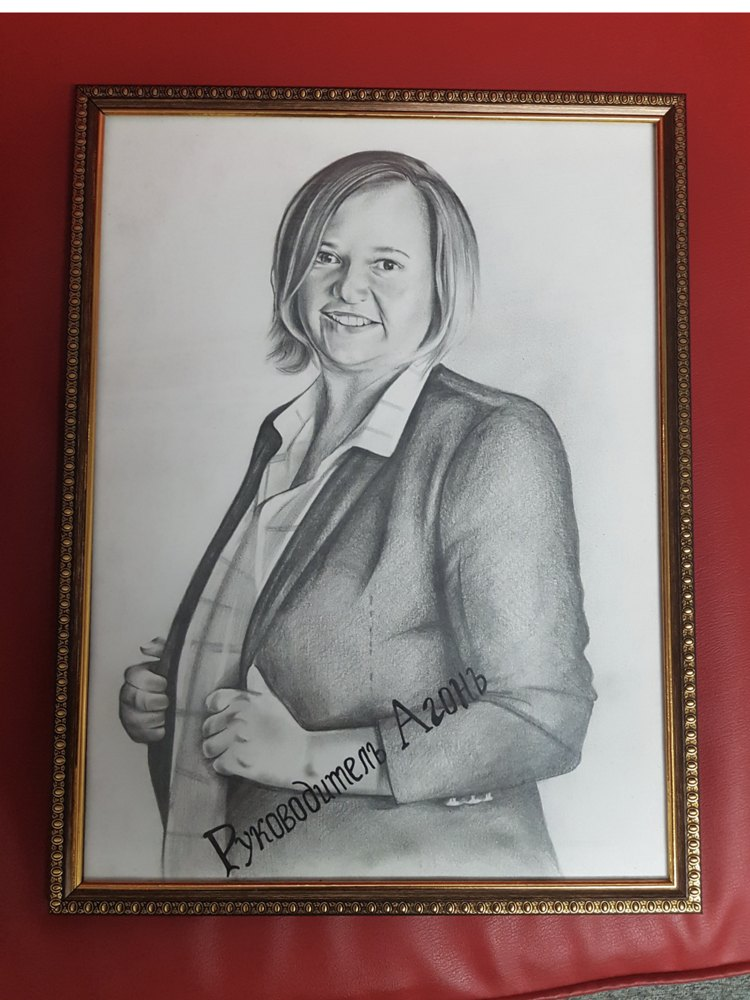

Биография · Ростов → Краснодар → Баден
Меня зовут Ксения Чудина. До этого была Ксенией Лукьяновой, а ещё раньше носила фамилию по рождению. Следы в интернете оставили только две из трёх — поэтому половину моей биографии не найти по нынешнему имени.
Восемь лет ресторанного бизнеса в Ростове
Первая запись в трудовой книжке — 1 июня 2005 года, должность курьер, мне шестнадцать. Высшее начинала и почти сразу закончила: туда надо было ходить, а мне было некогда — я работала. Всему остальному научили работа и собственные площадки.
Собрано из открытых источников и из того, что помню сама. Даты настоящие.
Три периода, три города, одна логика: сначала собрать зал, потом выйти на сцену самой. Начатого и недоделанного здесь тоже хватает — и оно всё пошло в дело.
восемь лет
Свой ресторанный бизнес
Ростов
Первые проекты я начала в семнадцать. К середине десятых у меня было три заведения разного жанра и две сцены, которые нужно было кормить программой круглый год.
7 февраля 2014открытие
Ресто
Просёлочная, 9а · до 700 человек в зале
Открывались концертом Billy's Band. Звать их на открытие было дорого и страшно — и это оказалось единственно верным решением: площадка сразу встала в один ряд с городскими клубами, а не с барами с живой музыкой.
Больше двухсот крупных концертов за четыре года. Программа: среда — кинобар, четверг — открытый микрофон, пятница и суббота — концерты, воскресенье — блюз. Плюс два собственных конкурса, «Битва Сирен» и отборочные «Голоса».
те же годы
Арт
Московская, 48А · два зала, от 20 до 100 человек
Рок, рок
2014
Одесский кабачок «Бенина мама»
Пушкинская, 80 · один зал на сорок человек
Форшмак, рыба
30 сентября 2016конец главы
Здесь закончилась моя ресторанная карьера в России
Запись в трудовой книжке: уволена из «Рест
Закончились не только площадки. Закончилось партнёрство и много чего ещё — восемь лет, три заведения, две сцены, всё разом.
Рестораны мы с партнёром поделить не смогли. Обороты были несколько миллионов рублей в месяц, но всё заработанное мы вкладывали обратно в развитие — своих денег у меня не было. Он не уступил. Я ушла ни с чем.
Через год
На этой психе я успела выйти замуж за массажиста и уехать в Краснодар. Развелась через полгода. Зато в Краснодаре началась совсем другая жизнь — отраслевая.
те же ростовские годыне доделала
Should Know — представитель по Ростову
Проект был крутой, а я взялась и не довела. Не хватило времени, медийности, знаний и понимания — всего сразу.
Смешно, что по сути это ровно то, чем я занимаюсь сейчас в Швейцарии: собрать знание, которое людям нужно, и отдать его дальше. Тогда я просто не доросла до собственной идеи.
2015не получилось
«Генералка» — цикл передач, который я не сняла
Краудфандинг на Planeta.ru
После съёмок «Ревизорро» я захотела сделать передачу о том, как на самом деле устроены правила в общепите и что бывает с заведением после проверки. Цель была 385 000 ₽. Собрала 610.
Тема никуда не делась. Через четыре года я вышла с ней на сцену — просто в другом формате.
2016–2018решение
Качество в MYBOX — и уход из сети
Руководитель сервиса и качества MYBOX — 300 ресторанов take away и доставки в 90 городах России
Меня взяли руководителем качества. И на собеседовании мне было важно рассказать про свой телеопыт и про «Ревизорро» — не ради красивой строчки. Просто я на своей кухне знала, чего стоит бардак и как на нём теряют бизнес. Такое не выучивается по регламенту.
Правда, когда повара со временем находили ту самую передачу со мной, у них появлялись вопросы. А ответы было сложно понять 🙂
Там же я прошла методологию Адизеса: компания развивалась по ней, через Институт Адизеса, и корпоративные тренинги были встроены в работу. Оттуда я впервые по
Эта позиция дала мне ровно тот объём знаний, которым хотелось делиться. Весной 2018 года я сама нашла конференцию и договорилась о докладе: EcomWeek, второй фестиваль интернет
Я выступила — и уволилась. В никуда, хотя всего парой месяцев раньше мне подняли зарплату и перевели в московский офис. Шеф был уверен, что меня схантили. Последний рабочий день — 28 апреля 2018 года.
Выбор был не между компанией и деньгами. Он был между тем, чтобы хорошо управлять процессами внутри одной очень крутой компании, и тем, чтобы отдавать знания дальше — большему числу людей, чем помещается в один штат.

В ноябре съездила на MEGUSTRO в Петербург слушателем и уехала оттуда с мыслью, что хочу стоять по другую сторону. А весной вышла на большую московскую сцену — 16 апреля 2019 года, ConfUse. Через год после EcomWeek — и уже от своего имени, а не от сети.
16 апреля 2019точка старта
ConfUse, Москва
Конференция Usedesk о клиентском сервисе
Первая большая московская сцена и первый доклад о клиентском сервисе уже от своего имени, а не от сети. Дальше пошло подряд: METRO EXPO в марте, «Грабли ресторанного бизнеса» в апреле, форум для рестораторов края — тоже в апреле.
17–18 октября 201930 000 человек
Форум «Дело за малым!», Краснодар
Сцена, с которой сразу после меня говорил Илон Маск
Маска позвали билбордом напротив офиса SpaceX в Лос
И с этой же сцены громко заявила на весь зал о платформе «Моя Адыгея». Я начала её годом раньше, в 2018
Но товарный знак «Моя Адыгея» зарегистрирован на меня и действует до сих пор. Из всего брошенного это единственное, к чему я могу вернуться, — и, возможно, вернусь в 2027
2019–2021
Роли, под которыми меня объявляли
Глава представительства Федерации рестораторов и отельеров в Краснодаре. Управляющий партнёр сети национального фастфуда «Тётка Zапеканка». Основатель платформы digital
Параллельно — выставки и статьи: Horeca by Kazan, MEGUSTRO второй год подряд, RestArt, HoReCa Don, четыре материала на Лемма.Плейс общим тиражом почти пятнадцать тысяч прочтений.
8 апреля 2021пауза
Последняя российская сцена
Дальше четыре года и девять месяцев тишины: переезд, другая страна, другой язык и проекты, построенные с нуля.
2022первое здесь
Завтрак на пятьдесят человек
Швейцария
Придумали с подругой
с 2024
Галерея Kunstwerkstube, теперь Art
Баден, Bäderstrasse 28 · дом 1829 года в термальном квартале
Больше тридцати выставок за два года и картин продано более чем на 150 000 CHF. Там же — завтраки со спикерами на двадцать человек. Сейчас галерея выросла в CADRE: бранчи, аперо, сезонные ужины и работы больше сотни художников на стенах.
20–22 февраля 202622 000 человек
MOTO
Цюрих, StageOne Oerlikon
Первая за много лет мотовыставка в Швейцарии. Сделали вдвоём с мужем за полгода с нуля: на нём выставочная часть и контакты, на мне нейминг, бренд, маркетинг и digital.
22 000 посетителей в первый же год — и это потолок площадки, а не спроса: очередь стояла от вокзала. Следующая — 19–21 февраля 2027.
2026возвращение на сцену
Снова говорю вслух
В январе — блогер
В ноябре — Frankenplatz.ch, крупнейший русскоязычный форум о деньгах в Швейцарии: 12 ноября в Лозанне, 14–15 ноября в Бадене.
По записям в трудовой книжке и в электронных сведениях Социального фонда: с шестнадцати лет до тридцати двух. Официального здесь меньше, чем предпринимательского — книжка фиксирует только работу по найму, а всё своё в неё не попадает. Что не попало — ниже, отдельным списком.
«Университет
«ЛЕК
МКБ «Москомприватбанк» · краснодарский филиал
«Экспресс
«Сумма Телеком» · филиал в Краснодаре
«Кавказ
Шесть лет в финансах и связи — это и есть моё образование. Аудит, бухгалтерия, кредиты, продажи, управление отделом. Ничего из этого мне не преподавали — всё приходилось осваивать на рабочем месте, потому что завтра нужно было сдавать результат.
«Артпаб» · арт
«Рест
«Амоссо»
«МБ
28 апреля 2018 года — последний рабочий день по найму в этой главе. Уволилась после доклада, на который меня не отпускали. Через полгода поехала на MEGUSTRO в Петербург слушать чужие доклады, а весной 2019
Этих трёх лет в трудовой книжке нет вообще — и это самые публичные мои годы. После ухода из сети 28 апреля 2018 года я работала не по найму: партнёрство, отраслевые роли, консультирование и сцена.
Основатель «Амоссо — Консалтинг». Амбассадор клиентского сервиса, контроля качества и управления изменениями в ресторанах. Автор курса по управлению репутацией и SERM
Тридцать человек в наставничестве. Направления: консалтинг в бизнесе и HoReCa, стратегический маркетинг, оптимизация бизнеса и описание процессов, стандарты и регламенты, программы лояльности, клиентский сервис, контроль качества, управление изменениями, HR
Отсюда расхождение в цифрах выступлений. В моём счёте их больше трёхсот: корпоративные сессии, бизнес
Центр развития предпринимательства · АНО
Здесь российская трудовая книжка заканчивается. Дальше — Швейцария, где записи в книжке никому не нужны, а нужны работающие проекты.
И это самая интересная запись из всех. Тогда я сильно думала, как и зачем я тут оказалась. Теперь точно знаю 🙂
Площадки и проекты, где я была партнёром, совладелицей или просто делала дело без трудового договора.
Больше пятисот вечеров: 200+ крупных концертов в «Бухаресте» и 300+ в арт
Здесь список короткий не потому, что концертов было мало. Их было за три сотни — в полтора раза больше, чем крупных вечеров в «Бухаресте». Просто зал вмещал от двадцати до ста человек, а вечер на тридцать не попадает ни в билетный агрегатор, ни в городскую афишу, и снимать его никто не приезжает.
У «Бухареста» четыре года подряд был свой оператор — отсюда полторы сотни записей и точные даты. У арт
И да — со всеми знакома лично 😄
Швейцария, семь направлений. То, что было в России, — выше, в разделе про стаж.
Форумы, выставки, сообщества и пространства — я собираю залы двадцать лет, сначала в России, теперь в Швейцарии.
Написать мне